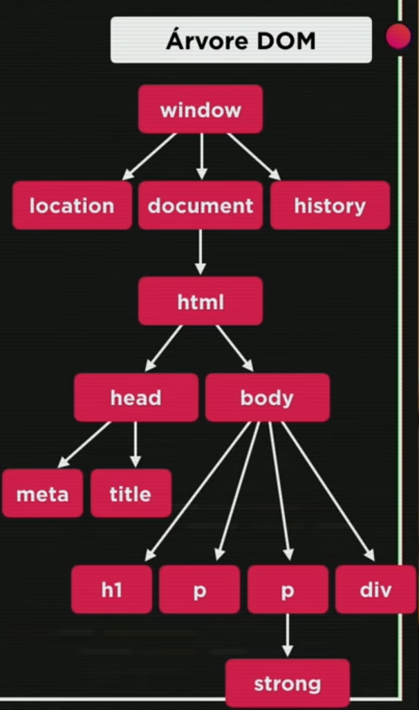

Podem ser escritos com os comandos:
Com // ou /**/
let - declaração de variáveis. Aceita declaração sem atribuir valor.
let nome;
nome = 'Luciano';
const - contatante. Precisa de atribuição já na declaração.
cost nome = 'Luciano';
var - Está caindo em desuso. Permite mudanças que nem sempre são desejáveis.
Uma variável criada sem determinar se é let, var ou const, assume tipo var, por padrão.
Abrir o terminar do VSCode na pasta que contenha o arquivo JS
node _nome arquivo js_
Pra identificar o tipo da variável, usar a função typeof.
typeof(nome) OU typeof nome
var agora = new Date()
var dia_semana = agora.getDay() //dia da semana
//sendo
/*
0 - Domingo
1 - Segunda
2 - Terça
3 - Quarta
4 - Quinta
5 - Sexta
6 - Sábado
*/
var hora_atual = agora.getHours()//hora atual
Pode ser feita usando o comando JS window.prompt('mensagem').
var nome = window.prompt('Qual seu nome? ')
E mostrado na tela com window.alert() / document.write()
window.alert('Seja bem vindo(a)' + nome + ' !')
Tendo uma variável n string:
Dado um número n
Usar a função isNan (is not a number).
const var1 = "Luciano";
const var2 = 10;
const var3 = "10";
console.log(`Não são ou não podem ser numéricos: \n
var1: ${isNaN(var1)}\n
var2: ${isNaN(var2)}\n
var3: ${isNaN(var3)}\n`);
null pode ser o valor definido intencionalmente para alguma variável que não possui valor.
undefined é o valor atribuído automaticamente quando uma variável é declarada e nenhum valor é atribuído a ela. Esse "valor" undefined também é esperado em algumas situações, no lugar de exceções.
const nome = null; //null const nome; //undefined
let nota1 = 7;
let nota2;
console.log(nota1 + null); //resultado 7
console.log(nota1 + nota2); //resultado NaN
O tipo Symbol é um dos tipos primitivos em JavaScript, introduzido no ES6 (ECMAScript 2015), e representa um identificador único e imutável. Símbolos são frequentemente utilizados para criar propriedades de objeto que são únicas e não interferem com outras propriedades existentes.
// Criando um símbolo
const meuSimbolo = Symbol();
// Símbolos podem receber uma descrição (opcional)
const simboloComDescricao = Symbol('descricao_do_simbolo');
// Símbolos são únicos
const outroSimbolo = Symbol();
console.log(meuSimbolo === outroSimbolo); // Saída: false
// Símbolos podem ser usados como chaves de propriedades de objetos
const obj = {
[meuSimbolo]: 'valor_do_simbolo'
};
// Acessando a propriedade usando o símbolo como chave
console.log(obj[meuSimbolo]); // Saída: 'valor_do_simbolo'
Dada uma variável string nome
const texto = 'estudando JavaScript';
texto.includes('Java'); // retorna true
Como adicionar texto com aspas simples e duplas dentro de uma string?
Usar `` para declarar a string e as aspas normalmente dentro.
const frase = `Então ele disse: "goiaba!"`;
console.log(frase);
Dada uma variável number num
Para facilitar a utilização de variáveis em frases, sem depender do uso de '' + '', usa-se ${} envolvendo a variável. Importante lembrar que só funciona se a frase estiver envelopada com crase.
var nome = "Luciano"
window.alert(`O nome do aluno é ${nome}`)
Precedência de Operadores
Atribuições:
Dica:
Dica: Numa expressão com todos esses operadores, a precedência entre eles é: 1 - aritméticos; 2- relacionais; 3- Lógicos.
É uma maneira simplificada de escrever um teste para uma expressão, que caso seja verdadeira, assume um valor, caso seja falsa, assume outro valor.
teste ? true : false
Mostra na tela uma valor
media>=7 ? "Aprovado" : "Reprovado"
Ou ainda o caso de atribuir um valor a variável status os valores Maior ou Menor, a depender se a idade é ou não maior ou igual a 18
status = idade>=18 ? "Maior" : "Menor
Geração de números aleatórios entre 0 e 1 (1 não incluso). Para gerar números inteiros:
DOM - Document Object Model - Modelo de Objetos para Documentos é uma abstração que mostra como uma página web é estruturada por meio de objetos. Por meio das funcionalidades desses objetos, podem ser executadas ações na página. Como por exemplo, mostrar a URL atual da página:
document.write(window.document.URL)
Essa estrutura da página é chamada de árvore DOM. Um exemplo simples de uma árvore DOM de uma página:
Cada página tem sua própria árvore DOM.
Seleciona-se elementos da página pela sua tag, usando o comando getElementsByTagName(tag).
Selecionar o primeiro parágrafo da página
//Seleciona o primeiro parágrafo
var p1 = window.document.getElementsByTagName('p')[0]
//Mostra seu texto na tela
window.document.write(p1.innerText)
//Mostrar seu texto com os tratamentos html
window.document.write(p1.innerHTML)
//Mudar sua cor
p1.style.color = 'red'
[0] - designa que só o primeiro parágrafo será selecionado.
//Seleciona o elemento com id = paragrafo_comid
var paragrafo = window.document.getElementById('paragrafo_comid')
//Mostra na tela
window.document.write(paragrafo.innerHTML)
//Mudar seu conteúdo
paragrafo.style.background = 'green'
paragrafo.innerText = 'mudei aqui'
Seguindo o mesmo princípio de tag e ID.....
//Seleciona o primeiro parágrafo com class = escolhido
var paragrafo = window.document.getElementsByClassName('escolhido')[0];
//Seleciona o primeiro parágrafo com name = escolhido
var paragrafo = window.document.getElementsByName('escolhido')[0]
Esse método mais recente permite selecionar os elementos pelo seu seletor do CSS.
//Selecionando pelo seletor - p com id paragrafo_comid
var p = window.document.querySelector('p#paragrafo_comid')
//Mostrando na tela
window.document.write(p.innerHTML)
São interações com elementos da página. Elas ocorrem em situações específicas, por exemplo:
A lista de eventos é diversa, pesquisar em Event Reference MDN.
A utilidade desses eventos é o fato de poder ser feita uma função ou várias que só vão ser executdas caso algum evento DOM tenha sido acionado.
Por exemplo, mudar o texto de uma tag div caso o usuário clique nela. Para fazer isso:
A maneira mais organizada é, criar um id para a tag desejada no HTML, e no JS, criar listeners, um recurso que vai observar o elemento e executar a função configurada caso o evento DOM ocorra.
No HTML:
div id="area">
Interaja...
div>
No JS:
script>
var a = window.document.getElementById('area')
//click é o evento DOM, clicar é a função a ser chamada caso ele ocorra.
a.addEventListener('click',clicar)
function clicar(){
a.innerText='Cliquei'
a.style.background = 'red'
}
script>
Outra maneira é chamando a função diretamente na tag do HTML:
No HTML:
body>
div id="area" onclick="clicar()">
Interaja
div>
body>
onclick - Ao clicar no elemento
"clicar()" - Chama a função JS clicar()
No script JS:
function clicar(){
var a = window.document.getElementById('area')
a.innerText = 'Cliquei!'
a.style.background = 'red'
}
var a = window.document.getElementById('area') - Faz a ligação entre a variável JS a e o elemento de id area.
a.innerText = 'Cliquei!' - muda o texto do elemento
a.style.background = 'red' - deixa o fundo vermelho
if(condição){
codigo
}
if(condição){
codigo para true
}else{
codigo para false
}
if(condição1){
codigo para true
}else if (condição2){
codigo para true condição2
}else if(condição3){
codigo para true condição3
}else{
se tudo for falso, chega aqui
}
switch(variavel){
case valor1:
break
case valor2:
break
case valor3:
break
default:
//else do switch
break
}
while(condição){
codigo
}
do{
código
}while(condição)
for(inicialização;condição;incremento){
código
}
Exemplo:
for(contador=1;contador<=10;contador++){
console.log(contador)
}
let letras = [a,b,c]
//a - índice 0
//b - índice 1
//c - índice 2
Numa posição específica
console.log(letras[1])
//mostra o segundo elemento do vetor
Percorrer Vetor com For
let pos_letra
for(pos_letra=0;pos_letra<=(letras.length)-1;pos_letra++){
console.log(`Posição ${pos_letra} - valor ${letras[pos_letra]}`)
}
Ou, usando a versão simplificada
for(let pos in letras){
console.log(`Posição ${pos} - valor ${letras[pos]}`)
}
Consultar o índice pelo valor
console.log(letras.indexOf(b))
//Retorna o índice do elemento de valor b
//*Retorna -1 caso não exista o elemento
Adicionar em um índice específico
let letras = [a,b,c]
letras[3] = d
Adicionar ao final do vetor
letras.push('d')
letras.length - tamanho do vetor
function nome_funcao(parametros){
codigo
return valor
}
a=nome_funcao(x) // chamada da função
Na construção da função, definir valores para os parâmetros, caso na sua chamada, não seja definido.
function soma(a=0,b=0){
return a+b
}
console.log(soma(2))
//Resultado é 2, porque a=2 e b=0
let dobrar = function(num){
return x*2
}
console.log(dobrar(10))
//Resultado é 20, porque 10*2 = 20
São estruturas compostas que permitem criar campos de diferentes tipos com nomes ao invés de índices.
let pessoa{
nome: 'Luciano',
idade: 28,
sexo: 'M'
peso: 85.2
engordar(p){
this.peso += p
}
}
//nome, idade e sexo, peso - atributos
//engordar - função do objeto que faz seu próprio atributo peso aumentar
Live Server: extensão VS Code que atualiza o código HTML/CSS/JS com o navegador (sem precisar ficar recarregando o navegador). Para usá-lo num arquivo, clicar com botão direito -> abrir com Live Server